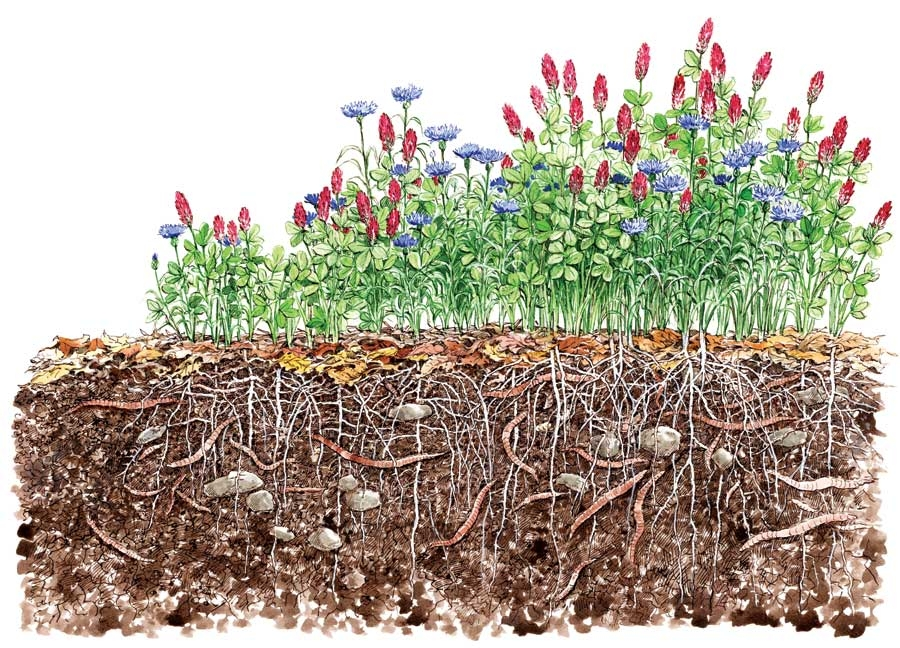
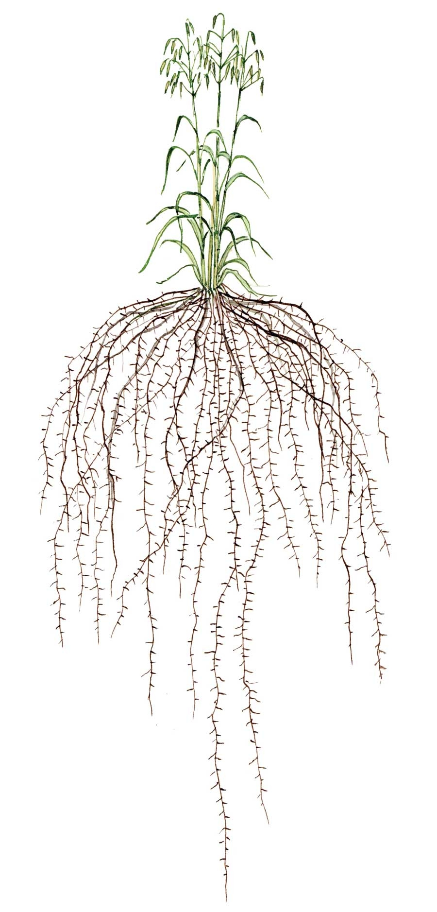
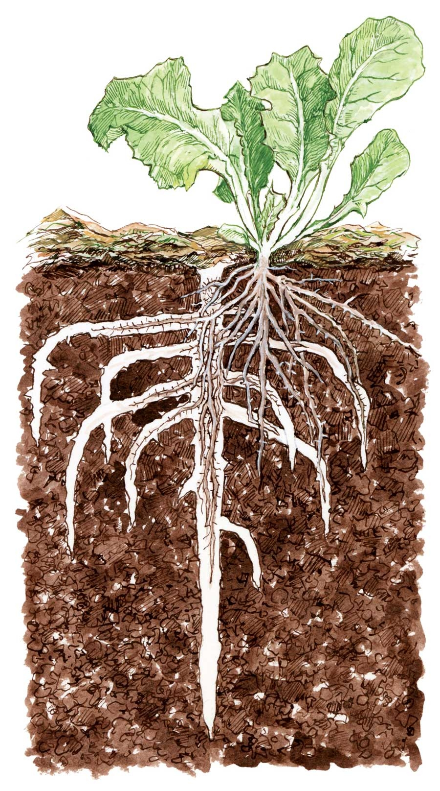

There are three main ways to improve your soil - grow cover crops, mulch the surface with biodegradable mulches, and/or dig in organic soil amendments (such as compost, grass clippings, rotted manure or wood chips). All have their advantages and none should be discounted, but cover cropping is the method least likely to be practiced in home gardens. There is a reason for this: Information on using cover crops is tailored to the needs of farmers who use tractors to make short work of mowing down or turning under cover crops. But when your main tools for taking down plants have wooden handles and you measure your space in feet rather than acres, you need a special set of cover crop plants, and special methods for using them.
A cover crop is any plant grown for the primary purpose of improving the soil. Since the early 1900s, farmers have used cover crops to restore fertility to worn-out land. In addition to helping bulk up soil with organic matter, cover crops prevent erosion, suppress weeds, and create and cycle soilborne nutrients using the power of the sun. Recent advances in soil biology have revealed two more ways cover crops can improve soil.
Rhizodeposition is a special advantage to working with cover crops. Many plants actually release sugars and other substances through their roots. They are like little solar engines, pumping energy down into the soil. With vigorous cover crop plants, this process goes on much more deeply than you would ever dig - 6 feet for oats and rye! If you are leaving your garden beds bare in winter, you are missing the chance to use cold-hardy crops such as cereal rye or oats to solar-charge your soil. Thanks to this release of sugars, the root tips of many plants host colonies of helpful microorganisms, and as the roots move deeper, the microbes follow.
But so much for scientific talk. If you’ve experimented with cover crops, perhaps you have dug up young fava beans or alfalfa seedlings to marvel at the nitrogen nodules on their roots, or watched a stand of buckwheat go from seed to bloom in four weeks flat. Or how about this one: It’s April and the soil is warming up and drying out. After loosening a clump of fall-sown wheat with a digging fork, you pull up a marvelous mop of fibrous roots and shake out the soil. What crumb! The soil’s structure is nothing short of amazing! These are the moments an organic gardener lives for.
Bio-drilling is what happens when you use a cover crop’s natural talents to “drill” into compacted subsoil. For example, you might grow oilseed or daikon radishes as a cover crop where their spear-shaped roots will stab deep into tight subsoil. Bio-drilling action also takes place when deeply rooted cover crop plants penetrate subsoil and die. Then, the next crop grown may actually follow the rooting network mapped out by the cover crop (see illustration in the Image Gallery). Maryland researchers were able to track this process using special camera equipment (a minirhizotron), which took pictures of the interactions between cover crop (canola) and crop plant (soybean) roots. As the canola’s deep roots decomposed, soybean roots followed the trails they blazed in the subsoil, hand in glove. In addition to reduced physical resistance, the soybean roots probably enjoyed better nutrition and the good company of legions of soil-dwelling microcritters, compliments of the cover crop.
Dozens of plants have special talents as cover crops, and if you live in an extremely hot, cold, wet or dry climate, you should check with your local farm store or state extension service for plant recommendations - especially if you want to use cover crops under high-stress conditions. Also be aware that many cover crop plants can become weedy, so they should almost always be taken down before they set seed.
Speaking of taking down, this is the sticking point for most gardeners when it comes to cover crops, which is why it’s a good idea to start small with your first cover crop plantings. Traditionally, cover crops are plowed under, but most gardeners chop, cut or pull them, and use them for mulch or compost. Or you can assign the task to a flock of pecking poultry. All are sound methods, and it is possible that composting cover crop plants produces a more balanced soil amendment compared to chopping raw-crop residue directly into the soil. Pulling plants saves time, too, because you don’t have to wait three weeks (or more) to plant, in order to avoid possible negative reactions between rotting plant residues and the plants you want to grow. For example, the cover crop known as sudex (a fast-growing sorghum-Sudan grass hybrid) produces gargantuan amounts of biomass (leaf, stem and roots), but fresh sudex residue in the soil inhibits the growth of tomatoes, lettuce and broccoli. Oats, wheat and other cover crop plants also produce allelopathic substances that can temporarily hinder the germination and growth of other plants, too, but not in quantities sufficient to cause serious disturbances in the garden. If you chop in fresh cover crop residues, just plan to wait two to three weeks before sowing crop seeds.
The following cover crops work well in a wide range of climates and situations, and they’re not hard to take down, as long as you do it at the right time and in the proper way. We’ve selected these six because they are easy to manage using hand tools, grow during different seasons and provide multiple benefits in the garden.
During the summer, buckwheat (Fagopyron esculentum) is in a class by itself as a cover crop. Seeds sown in moist soil turn into a weed-choking sea of green within a week, with many plants growing 2 feet high or more and blooming in less than 30 days. Should you need to reclaim space that has been overtaken by invasives, buckwheat can be your best friend. In my garden, buckwheat has been a huge ally in cleaning up a spot overrun by dock, bindweed and other nasties that grow in warm weather. For two years, each time the noxious weeds grew back, I dug them out and planted more buckwheat. Throughout the battle, the buckwheat attracted bees and other buzzers in droves. Fortunately, even mature buckwheat plants are as easy to take down as impatiens - simply pull the succulent plants with a twist of the wrist, or use a hoe or scythe to slice them off at the soil line. You can let the dead plants die into a surface mulch and plant through them, gather them up and compost them, or chop them into the soil.
In late summer, while the soil is still warm, you have a fine opportunity to try barley (Hordeum vulgare), a fast-growing grain that’s great for capturing excess nitrogen left over from summer crops, which might otherwise leach away during the winter. Barley often suffers from winter injury in Zone 6, and is often killed altogether in Zone 5 and above. This is good! The dead barley residue shelters the soil through winter, and dries into a plant-through mulch in spring in cold zones.
Early fall is the best time to grow the dynamic duo of soil-building cover crops - oats (Avena sativa) mixed with cold-hardy winter peas (Pisum sativum). When taken down just before the peas start blooming in spring, an oat/pea combination cover crop is the best way to boost your soil’s organic matter and nutrient content using only plants. Both make a little fall growth when planted in September, and in spring the peas scramble up the oats. On the down side, one or both crops can be winterkilled before they have a chance to do much good north of Zone 5, and in more hospitable climates it will take some work to get the plants out of the way in spring. Do it by mid-April, because the job gets tougher as the plants get older. Cut or mow them down first, and then pull and dig your way through the planting. A heavy-duty chopping hoe works well for this.
Hairy vetch (Vicia villosa) needs a good head start on winter, too, but it’s hardy to Zone 4 and gives a huge payback in terms of soil improvement, and saved time and labor. Unlike many other cover crop plants, you can quickly kill hairy vetch by slicing just below the crown with a sharp hoe. When hairy vetch is beheaded about a month before it’s time to plant tomatoes and peppers, you can open up planting holes and plant through the dried mulch - no digging required.
Late fall is not a lost season for cover crops, but in most climates you’re limited to cereal rye (Secale cereale), the cold-hardiest of them all. Rye will sprout after the soil has turned chilly, but be sure to take it out early in spring, before the plants develop tough seed stalks. Or let your chickens keep it trimmed; leave the birds on the patch longer in spring and they will kill the rye for you. If you’re looking for a cover crop you can plant in October for cold-season poultry greens, cereal rye is probably the best choice.
In any season, you may find many more great cover crops in seed catalogs, or among your leftover seeds. As you consider possibilities, think about plants that quickly produce an abundance of leaves and stems, but are easy to pull up or chop down if you decide you don’t want them. Bush beans, leafy greens or even sweet corn can be grown as short-term cover crops, along with annual flowers such as calendulas and borage in early spring, or marigolds and sunflowers in summer. Teaming up a flower with a cover crop plant is always fun, whether you’re planting sulphur cosmos with cowpeas in summer, oats with dwarf sunflowers in late summer or bachelor’s buttons with crimson clover in the fall. Whatever you do, just don’t leave your soil bare or you’ll be missing out on a chance to capture solar energy to recharge your food web.
To locate mail-order sources for cover crops, go to the Mother Earth News Seed and Plant Finder.|
 ELAYNE SEARS You can choose colorful cover crops, such as bachelor’s buttons and crimson clover, to build your soil and beautify your beds. |
 ELAYNE SEARS Mature oat plants will grow 2 to 3 feet tall, but their roots can extend up to 6 feet into the soil. |
 ELAYNE SEARS As cover crop roots die off, they leave behind channels in the soil for the roots of subsequent crops to follow, making it easier for new roots to reach deep. |